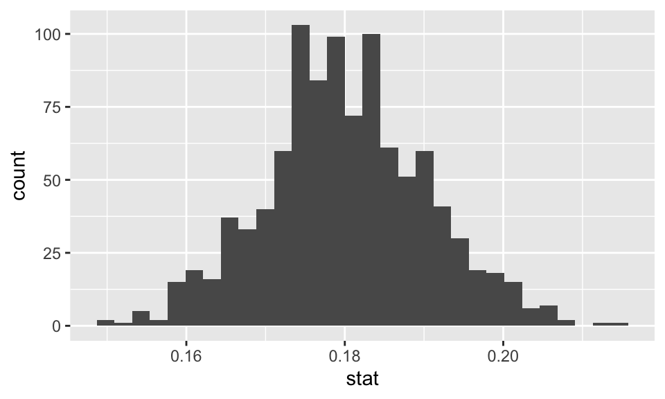
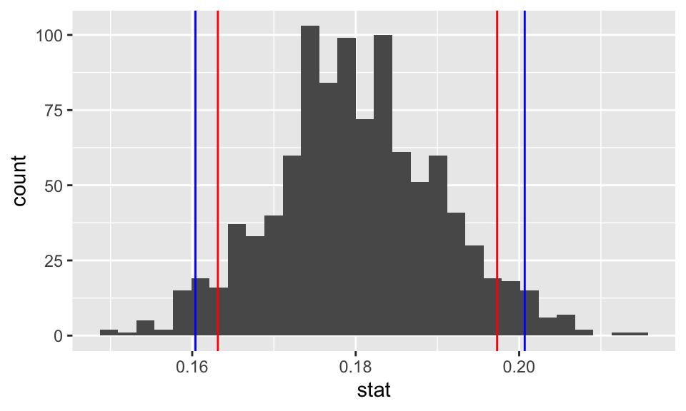

library(mosaic) # data lives in the mosaic package
data("HELPfull")Lab 4 - Math 58B: Bootstrap Percentile Confidence Intervals
Building on the work we’ve done this week to run a hypothesis test, we will use the infer package to complete an entire randomization test.
The goals for today include:
- using infer to create a bootstrap confidence interval
- creating a histogram representing a sampling distribution (which isn’t null)
- summarizing the hypothesis test in words of the problem
Advice for turning in the assignment
knit early and often. In fact, go ahead and knit your .Rmd file right now. Maybe set a timer so that you knit every 5 minutes. Do not wait until you are done with the assignment to knit.
The assignment part of the lab is ONLY the last six questions at the very bottom. However, the commands in the first half of the assignment are key to doing the second half.
Save the .Rmd file somewhere you can find it. Don’t keep everything in your downloads folder. Maybe make a folder called
StatsHWor something. That folder could live on your Desktop. Or maybe in your Dropbox.
Getting started
The infer vignette is excellent: https://infer-dev.netlify.app/index.html
The syntax for today is very similar to last week, but today the goal is to create confidence intervals instead of concluding hypotheses. As we go through the lab today, focus on the names of the function to make sure that you connect the name of the function to the action of the function.
Load packages / data
In this lab we will continue to use the infer package. The syntax is meant to focus understanding on the bootstrapping process. So for each line, pay attention to what the code is doing.
The data come from a randomized clinical trial called Health Evaluation and Linkage to Primary Care.
The HELP study was a clinical trial for adult inpatients recruited from a detoxification unit. Patients with no primary care physician were randomized to receive a multidisciplinary assessment and a brief motivational intervention or usual care, with the goal of linking them to primary medical care.
For today, we won’t focus on the treatment variable, instead we will work to understand if those individuals in the study might be representative of a larger population. That is, we will build confidence intervals for parameters that describe the population about which we can generalize the results.
Note: There are quite a few variables in this dataset which might be uncomfortable to discuss. Feel free to choose any variable that feels comfortable for you to analyze If you can’t find one, or if you feel uncomfortable engaging with this dataset in general, please let me know.
The task for today will focus on finding a confidence interval for a proportion parameter (where the population is given by the larger group from which these data were selected). You should choose a single variable from the dataset (there are 788 columns!) that is categorical but is coded as more than two levels. Note, choose a variable with the following constraints:
- at least 200 (non-missing) observations
- originally coded with 3+ levels
- your choice of “success” happens with frequency between 5% and 95%
To create the new variable of interest so that it has two levels and is represented by a character string (not a numeric value), we need the mutate() and case_when() functions.
I chose the variable B11A which represents how often the participants get sick. I used “Definitely true” or “Mostly true” to indicate that they get sick easier than most people. (Note: type ?HELPfull to see all of the potential variables.)
# Renaming the object so that the original data stays intact
HELP <- HELPfull %>%
mutate(
sick = case_when(
B11A <= 2 ~ "more",
B11A >= 3 ~ "nomore")) %>%
drop_na(sick)
# check to make sure my code worked
HELP %>%
select(sick, B11A) %>%
table(useNA = "ifany") B11A
sick 1 2 3 4 5
more 97 166 0 0 0
nomore 0 0 220 401 581# without the last info, I can't confirm that the NA values match:
# check to make sure my code worked
HELP %>%
select(sick, B11A) %>%
table() B11A
sick 1 2 3 4 5
more 97 166 0 0 0
nomore 0 0 220 401 581Logic for Bootstrapping
By resampling from the sample, the distribution (shape & spread / variability) of the sample proportions can be measured.
The confidence interval will be created by choosing the bootstrapped sample proportions from the tails of the bootstrap distribution.
The process will capture the true parameter in a given percent of datasets. Because we are working here with only one dataset, we have no idea whether we’ve captured the true parameter or not. We hope so!
Step 1. Observed Statistic
The first thing we need to do is to find the observed statistic of interest (here the sample proportion of success). Note that R is happy to act as a calculator, but we’re going to use the syntax associated with the confidence interval creation to get the value of interest.
Well, okay, first as a calculator:
(97+166) / (97+166+220+401+581)[1] 0.1795222Now using the infer syntax, we’ll specify the variable of interest (only one variable today!). Also, we’ll need to specify what a “success” means. Note that we get the same value for the sample proportion as we did when using R as a calculator. Whew.
HELP %>%
specify( response = sick, success = "more") %>%
calculate(stat = "prop")Response: sick (factor)
# A tibble: 1 × 1
stat
<dbl>
1 0.180Step 2. Resample the data with replacement (from the original sample)
The point of bootstrapping is to understand the variability of the sample proportions. We can understand that variability through taking new samples from the original dataset.
Hint: spend some time with the applets shown in class! * bootstrapping: http://www.lock5stat.com/StatKey/bootstrap_1_cat/bootstrap_1_cat.html * confidence intervals: http://www.rossmanchance.com/applets/2021/confsim/ConfSim.html
A note on the code… pay attention to the steps here… note that we don’t have the hypothesize() step because we aren’t hypothesizing anything!
specify()gives the appropriate information on the variable types. With only one variable, the syntax is:response = yourvariablename.generate()resample from the original sample with replacement.
Take a look at the output of the first three steps, before calculating the proportion. It’s hard to tell just by looking at the dataframe, but really what you see is that for each of the 4 replicates, new people are being selected into each resample.
HELP %>%
specify(response = sick, success = "more") %>%
generate(reps = 4, type = "bootstrap") %>% # set reps=4 just to see the process
head()# A tibble: 6 × 2
# Groups: replicate [1]
replicate sick
<int> <fct>
1 1 nomore
2 1 nomore
3 1 nomore
4 1 nomore
5 1 nomore
6 1 nomoreThe last step ties it all together:
calculate()finds the statistic (here our statistic is the proportion) for each of the resampled datasets.
Keep all of those differences, and take a look at them. Are they all the same? Do they vary a lot? Do they vary a small amount?
set.seed(4747)
boot_sick <- HELP %>%
specify(response = sick, success = "more") %>%
generate(reps = 1000, type = "bootstrap") %>% # need a lot of reps to truly understand
calculate(stat = "prop")
boot_sick %>% head()Response: sick (factor)
# A tibble: 6 × 2
replicate stat
<int> <dbl>
1 1 0.186
2 2 0.168
3 3 0.177
4 4 0.207
5 5 0.175
6 6 0.173Step 3. Look at all the differences
Fortunately for us, we saved all the differences in proportions into an object that was called boot_sick. We can visualize the differences using ggplot()!
boot_sick %>%
ggplot(aes(x = stat)) +
geom_histogram()
We can tell that the bootstrapped proportions fall roughly between 0.15 and 0.20 (ish). But we can quantify the interval of interest by finding the middle 90% or 95% or 99% of the bootstrapped proportions to correspond to the confidence interval values.
Remember, when adding layers to a plot use + instead of %>%.
ci_sick_90 <- boot_sick %>%
summarize(lower = quantile(stat, probs = 0.05),
upper = quantile(stat, probs = 0.95))
ci_sick_95 <- boot_sick %>%
summarize(lower = quantile(stat, probs = 0.025),
upper = quantile(stat, probs = 0.975))
boot_sick %>%
ggplot(aes(x = stat)) +
geom_histogram() +
geom_vline(data = ci_sick_90, aes(xintercept = lower), color = "red") +
geom_vline(data = ci_sick_90, aes(xintercept = upper), color = "red") +
geom_vline(data = ci_sick_95, aes(xintercept = lower), color = "blue") +
geom_vline(data = ci_sick_95, aes(xintercept = upper), color = "blue") 
Step 4. Calculate the confidence interval
The confidence interval(s) has(have) already been calculated above! We just need to print them out to see the actual values. Note that as seen on the graph (and as expected given the lower confidence), the 90% interval is narrower than then 95% interval.
ci_sick_90# A tibble: 1 × 2
lower upper
<dbl> <dbl>
1 0.163 0.197ci_sick_95# A tibble: 1 × 2
lower upper
<dbl> <dbl>
1 0.160 0.201Step 5. Make a conclusion
Conclusion: We are 90% (95%) confident that the in the larger population of people from whom these data were selected (e.g., patients with no primary care physician who were seeking help from a detoxification unit), the true proportion of people who get sick more often than others (as defined by a response of definitely true or mostly true) is between 0.163 and 0.197 (95% interval: 0.160 to 0.201).
To Turn In
The data
The write-up will use the same data as the main lab. But you choose a new variable now.
The data come from a randomized clinical trial called Health Evaluation and Linkage to Primary Care.
The HELP study was a clinical trial for adult inpatients recruited from a detoxification unit. Patients with no primary care physician were randomized to receive a multidisciplinary assessment and a brief motivational intervention or usual care, with the goal of linking them to primary medical care.
For today, we won’t focus on the treatment variable, instead we will work to understand if those individuals in the study might be representative of a larger population. That is, we will build confidence intervals for parameters that describe the population about which we can generalize the results.
library(openintro)
data("HELPfull")The task for today will focus on finding a confidence interval for a proportion parameter (where the population is given by the larger group from which these data were selected). You should choose a single variable from the dataset (there are 788 columns!) that is categorical but is coded as more than two levels. Note, choose a variable with the following constraints:
- at least 200 (non-missing) observations
- originally coded with 3+ levels
- your choice of “success” happens with frequency between 5% and 95%
Q1. Learning Community Q
Describe one thing you learned from someone in your learning community this week (it could be: content, logistical help, background material, R information, etc.) 1-3 sentences.
Q2. The study
Choose a variable of interest with the following characteristics:
- at least 200 (non-missing) observations
- originally coded with 3+ levels
- your choice of “success” happens with frequency between 5% and 95%
After choosing the variable of interest and re-coding the variable so that it is binary, use the table() function to confirm that your code is correct.
Q3. Parameter
In words, describe the parameter of interest.
Q4. Visualize the 99% CI for your parameter
Using the infer syntax, calculate and visualize a 99% CI for your parameter of interest.
Q5. Conclusion
In words, provide a conclusion for your parameter of interest (be sure to include the value of the endpoints of your interval).
Q6. Reflection
Let’s say that there was an alternative universe with other people who are similar in characteristics to the ones in the dataset at hand. And a second dataset was collected under identical conditions. The researchers came up with a confidence interval for the same parameter as you chose using the same bootstrap method.
Do you think their interval would contain the parameter of interest? Why or why not? Explain.
praise()[1] "You are lovely!"HW & Lab assignments will be graded out of 5 points, which are based on a combination of accuracy and effort. Below are rough guidelines for grading.
Score & Description
5 points: All problems completed with detailed solutions provided and 75% or more of the problems are fully correct.
4 points: All problems completed with detailed solutions and 50-75% correct; OR close to all problems completed and 75%-100% correct. An assignment will earn a 4 if there is superfluous information printed out on the assignment.
3 points: Close to all problems completed with less than 75% correct
2 points: More than half but fewer than all problems completed and > 75% correct
1 point: More than half but fewer than all problems completed and < 75% correct; OR less than half of problems completed
0 points: No work submitted, OR half or less than half of the problems submitted and without any detail/work shown to explain the solutions.
General notes on homework assignments (also see syllabus for policies and suggestions):
please be neat and organized, this will help me, the grader, and you (in the future) to follow your work.
be sure to include your name on the assignment
please include at least the number of the problem, or a summary of this question (this will also be helpful to you in the future to prepare for exams).
for R problems, it is required to use R Markdown. You can write out other problems with pencil and combine pdf as appropriate.
please do not print errors, messages, warnings, or anything else that makes your homework unwieldy. You will be graded down for superfluous printouts.
in case of questions, or if you get stuck please don’t hesitate to email me or DM on Discord! The sooner (and more often) questions get asked, the better for everyone.